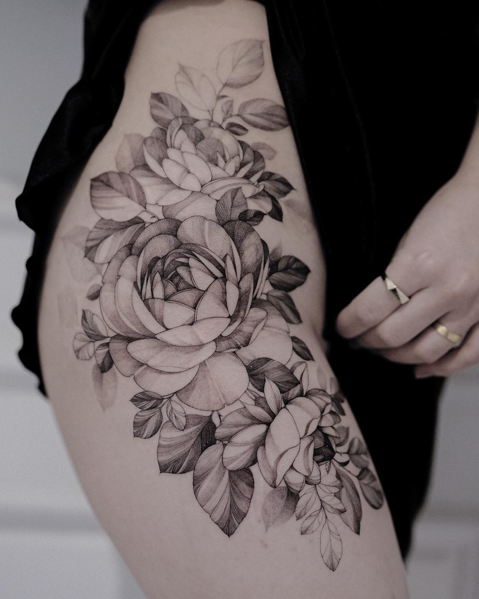
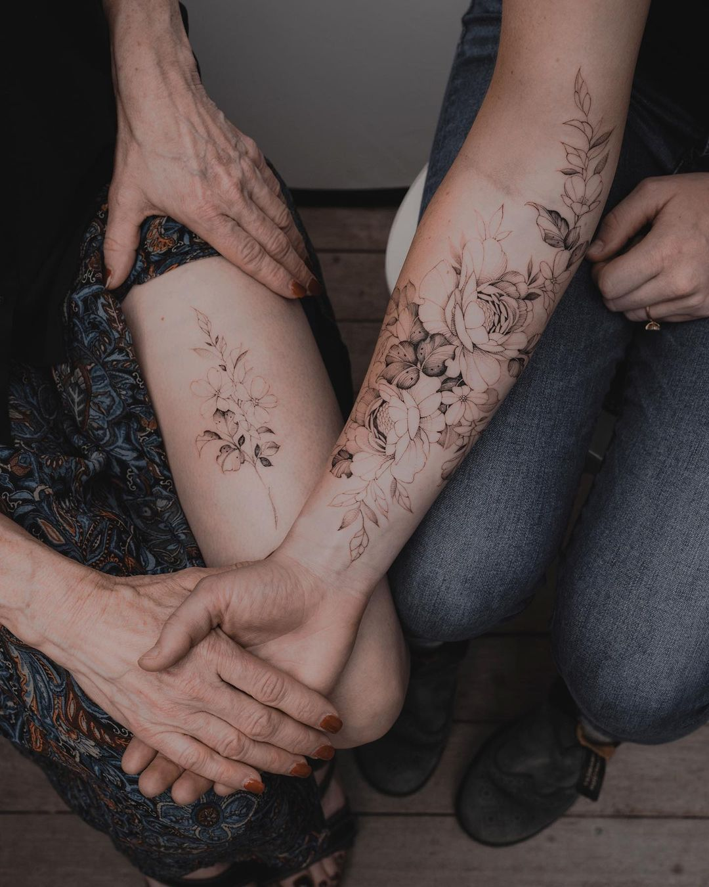

SEVENTHDAY
CATALOGUE
ABOUT US
SERVICES
AUTUMN
Begin journey


RHYTHM OF BODY
"What a crazy few weeks it's been. I'm happy to finally announce that my studio 'Seventh Day' will now be starting in autumn. I have Minnie here as a full time artist also and she will be taking bookings staring next week. Address is on my bio. Pop in for consult. I hate talking online"
TATTOO IN PHOTOGRAPHY
Photographers can drastically change the outcome of an image by choosing various cameras, lenses, film, and the framing and timing of a shot. Filters, studio lighting, various darkroom processes, and digital enhancement add even more tools for photographers to manipulate their images
Autumn offers many photo opportunities for those who love colorful yet moody days. With rapidly changing landscapes, colorful landscapes and shorter dates, it's not hard to see why this is a favorite season for so many photographers. The landscape lights up when the sun is at a low position during the hours around sunrise and sunset, creating a soft, picturesque light. This often creates a beautiful accent for vibrant autumn colors and can significantly improve the ambience. Depending on the needs and purpose of the photo, whether the scene or the portrait, the choice of angle and weather outfits also contribute to the overall picture, bringing harmony and unity during the season.
.jpg)